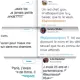

Au cours de l’histoire, le féminisme a su se développer grandement. Le mouvement a permis aux femmes de se faire entendre dans le monde entier et d’obtenir de nombreux droits. Découvrez une frise chronologique avec quelques dates importantes du féminisme.
Olympe de Gouges première féministe
1748-1793

“La Fronde” Premier quotidien féministe au monde

Marie Curie Prix nobel en 1903 et 1911

Congé maternité 1909

Droit de vote pour les femmes en France 1944
“Le deuxième sexe” Livre de Simeone de Beauvoir 1 mai 1949
Légalisation de la contraception 28 décembre 1967

Françoise Giroud Elle a été à la tête du serétariat d’Etat à la condition féminine
Loi contre l’abus sexuelle au travail 2 novembre 1992

Loi relative à l’égalité salariale entre les femmes et les hommes 23 mars 2006

Création du ministère des droits des femmes de plein droit 21 juin 2012

Discours d’Emma Watson au siège des nations unies 20 septembre 2014
#BalanceTonPorc 13 octobre 2017

Contraception gratuite pour les moins de 15 ans 27 août 2020